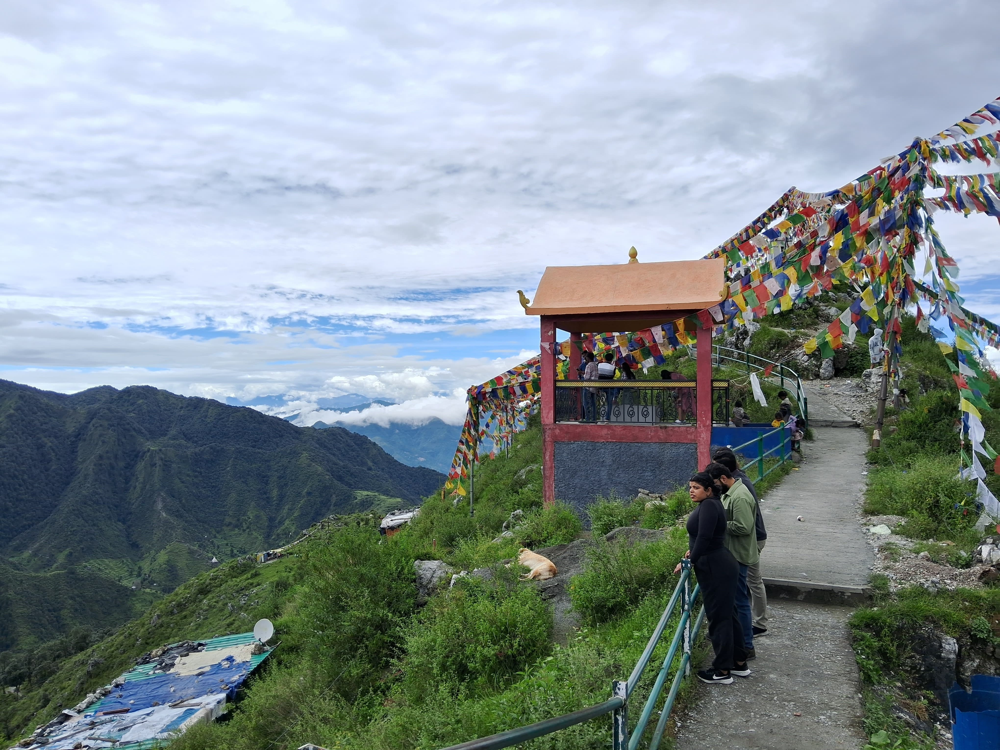

- 
Dalai Hill
The Tibetan temple, Shedup Choephelling Temple, is located in the Happy Valley in Mussoorie, approximately 400 metres from the Dalai Hills. One of the most gorgeous and breathtaking locations in Mussoorie is the Dalai Hills. It is covered in Buddhist prayer flags and features a statue of Lord Buddha that was built by the 20th regional Tibetan student congress in Mussoorie. It was dedicated on June 13, 2014, and is meant to ward off illness, violence, war, and natural disasters. You may get an aerial glimpse of Uttarakhand's massive Garhwal Himalayan Range from the Dalai Hills. For anyone looking to experience the charm and beauty of Mussoorie's hill station, the Dalai Hills offer a wonderfully peaceful and quiet setting.
Situated slightly above the Lal Bahadur Shashtri Academy is the Dalai Hills. This location offers some truly stunning views of the larger Himalayas on a clear day. Trekking enthusiasts will also enjoy the Dalai Hills. Numerous walks leave from the Dalai Hills and travel through dense, biologically diverse forests. Bring some food with you if you intend to trek in the Dalai Hills because you can get tired after a strenuous walk. However, please do not contaminate the area, bring your trash with you, leave the area messy, or overuse the space.
- There are many different trekking trails that begin in the Dalai Hills and go through dense forests teeming with wildlife and plants.
- Nearby places are George Everest,Company Garden,Kempty Falls,Cloud End and Massoorie.
- Given the serenity and the views, this location is great for catching the sunset, having a picnic with family, for camping and also for photography. Food stalls around serve refreshments.